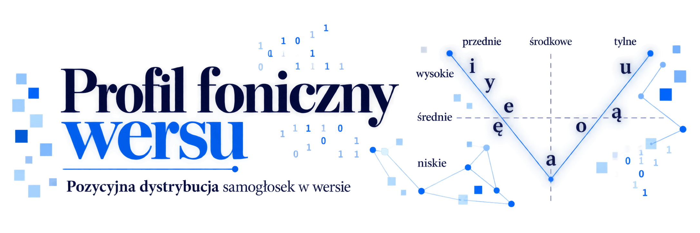

Po co powstaje ta strona?
Celem niniejszego projektu jest ustalenie, na podstawie obszernego korpusu literatury polskiej, czy da się zaobserwować jakąś zależność między pozycją sylaby w wersie a profilem artykulacyjnym samogłoski stanowiącej jej ośrodek. Badanie obejmuje w szczególności dwie podstawowe opozycje artykulacyjne: położenie samogłoski na osi przednia-środkowa-tylna oraz na osi niska-średnia-wysoka.
Analiza ma zweryfikować, czy dystrybucja określonych typów samogłosek w obrębie wersu jest przypadkowa, czy może wykazuje pewne tendencje związane z pozycją: nagłosową, środkową i wygłosową.
W dalszej kolejności planuję rozszerzenie analizy o dwa zagadnienia:
- Jeżeli zależności pozycyjne zostaną potwierdzone w badaniu ilościowym, chcę zweryfikować, czy ich charakter ma jakikolwiek związek z formatem wiersza, a więc czy inny profil wykazują wersy 8-zgłoskowe, 11-zgłoskowe, 13-zgłoskowe itd.
- Chcę ponadto zbadać, czy istnieje zależność między pozycją akcentową sylaby a profilem artykulacyjnym jej samogłoski, a więc czy można zaobserwować pewne preferencje, jeśli chodzi o rozmieszczenie samogłosek w sylabach akcentowanych i nieakcentowanych.
Narzędzie dzieli każdy zrekonstruowany wers na nagłos, część środkową i wygłos według liczby sylab, a następnie porównuje rozkład samogłosek pod względem położenia języka (przednie – środkowe – tylne) i wysokości (wysokie – średnie – niskie).
Wprowadź tekst
Dostępne są 3 sposoby wprowadzenia tekstu:
Wklej tekst
Wprowadź treść bezpośrednio w polu tekstowym.
Wczytaj plik .txt
Przeciągnij plik lub wybierz go z dysku.
Wybierz z biblioteki
Wczytaj tekst z katalogu assets/biblioteka.
Wklej tekst
Wczytaj plik .txt
Wybierz z biblioteki
Moja biblioteka
Nie znaleziono pasujących tekstów.
⇄ Przewijaj w poziomie, aby zobaczyć więcej pozycji
Profil pozycyjny samogłosek
Oś przednia – środkowa – tylna
−1 = przewaga samogłosek przednich, 0 = środkowych / równowaga, +1 = tylnych.
Oś niska – średnia – wysoka
−1 = przewaga samogłosek niskich, 0 = średnich / równowaga, +1 = wysokich.
Rozkład miejsca artykulacji
Udział procentowy samogłosek przednich, środkowych i tylnych w każdym odcinku.
Rozkład wysokości
Udział procentowy samogłosek wysokich, średnich i niskich w każdym odcinku.
Kontrola podziału – wers po wersie
Podział jest wykonywany według liczby sylab. Jeżeli matematyczna granica 1/3 lub 2/3 wypada wewnątrz sylaby, cała ta sylaba trafia do części środkowej. Liczby w komórkach: P/Ś/T = przednie/środkowe/tylne, W/Śr/N = wysokie/średnie/niskie.
| # | Wers po rekonstrukcji | Nagłos | Środek | Wygłos |
|---|